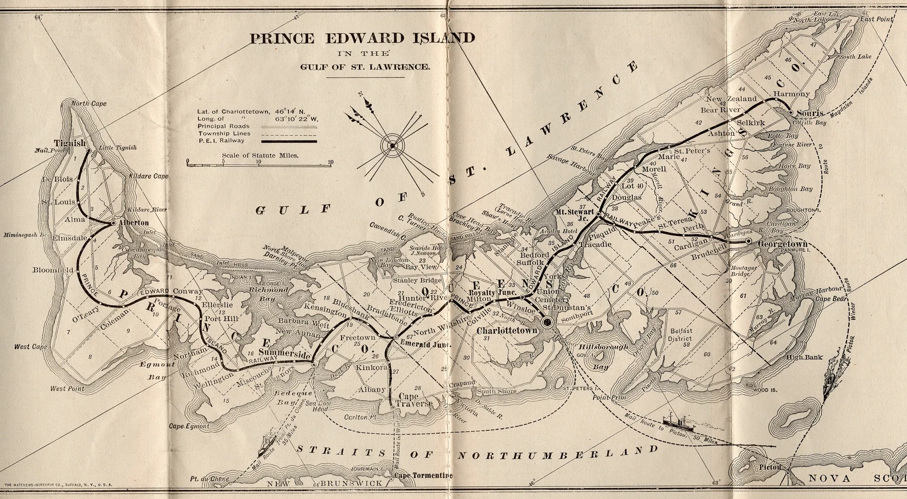

The Railway Stations of Prince Edward Island
Someone in Tignish sent a friend a postcard of the train and wrote that he was going to Charlottetown at four the next morning. In Kensington, a correspondent needed only four words to explain a picture of a handsome stone building: “This is our station.” Choose a town on the map to see what Islanders picked out for people who lived somewhere else.
Prince Edward Island Railway · October 1919
Western Island
Central and eastern Island
Select a rust-coloured stop to open its postcards. Small open circles mark other stops and junctions. The lines show how the towns connected in 1919, with the track curves simplified.
- Alberton
- Charlottetown
- Georgetown
- Hunter River
- Kensington
- Montague
- Murray Harbour
- Summerside
- Tignish
- Traveller’s Rest
Montague
Start with the steam around the locomotive on card 4603. There are people on the narrow platform and masts beyond the train. On the flag-bordered card the engine is gone and there is room to see the name MONTAGUE painted across the station roof. The opening festivities in 1906 included a ride to Georgetown and back. A visitor who came a few years later could still make both stops on one train.
The October 1919 timetable gives the journey almost minute by minute. The afternoon express left Mount Stewart Junction at 4:15, turned off at Montague Junction and called at Montague at 5:25. Then the names on the timetable repeat in reverse order: Robertson, Brudenell, Roseneath. At 5:45 the train was back at the junction, then went by way of Emmerson to reach Georgetown at six. The short branch explains how Montague and Georgetown could both have a station at the water’s edge and still share a train. Canadian National Railways, October 1919, table 37


More cards from Montague (2)
2641 · Souvenir of Montague, Prince Edward Island · 4531 · Souvenir of Montague, Prince Edward Island
There is more to see on this stretch of waterfront, including the message Agatha sent after a trip to the post office. Read the story of Montague’s first-train postcard.
Tignish
Card 4622 gives a clean view of the locomotive beside the long platform. The little group down the track is easier to make out in this copy, but turn over card 4098 for the reason to keep both. Bob was writing to Gordon Blake in Melrose, Massachusetts. He called it the “one and only Train Here,” counted one lighthouse and no streetcars, and announced his four-in-the-morning plans for Charlottetown. The year of Bob’s early start is still an open question.

More cards from Tignish (1)
Alberton
Two postcards in nearly the same position beside the rails give quite different impressions of Alberton. In the first, the track leads the eye past people waiting at the station and on toward a distant freight car. In the second, a motorcar stands close to the stone wall. Look at the masonry, then visit Kensington on the map. These were the Island’s two “boulder stations,” designed by Charlottetown architect Charles B. Chappell. Alberton’s was built in 1904–05. Alberton Railway Station, Canadian Register of Historic Places
The back of card 3102 records a second journey that has a charm of its own. On August 31, 1972, the sender wrote from Alberton, Prince Edward Island, to Alberton, Montana, and promised to see that the recipient got a good cancellation. The post office obliged. By then the station in the picture had already closed.


More cards from Alberton (4)
1106 · Alberton Depot, Alberton, P.E. Island · 2534 · Alberton Depot. Alberton, P.E. Island. · 2541 · Alberton Depot, Alberton, P.E. Island. F.C. Cropp Co, Milwaukee · 3667 · C.N.R. Station, Alberton, P.E.I.
Summerside
If you arrived at Summerside by water, this is the face of the railway you might have recognized. Three peaked gables rise above the waterfront. On card 0002 there is open water almost to the edge of the wharf. On 3894 a stretch of shore shows below it, and a string of passenger cars fills the space in front of the station. The coaches hide nearly the whole ground floor. Above the carriage on the right, the white letters of SUMMERSIDE are still clear.


More cards from Summerside (1)
Traveller’s Rest
Just east of Summerside, W. S. Louson photographed a man sitting on the platform with his feet toward the rails. There is cut wood piled in the foreground. Above the open doorway of the little wooden shelter, a sign gives the place its name. The coloured postcards credit Louson in the lower margin. On the black-and-white salesman’s sample the margin reads simply “Prince Edward Island” and 2666. The seated man, the doorway and even the pieces of wood match across all four copies.
Traveller’s Rest was a flag stop, where a train would stop on signal. In his history of Island stations, Allan Graham reproduced this view from Joyce Johnston’s collection and identified the shelter as the first Traveller’s Rest station. He also recorded an early plan for the main line to run from here directly to St. Eleanor’s, leaving Summerside on a branch. The line passengers actually travelled took them down to the Summerside waterfront. Table 34 of the October 1919 public timetable goes straight from New Annan to Summerside on the printed page. Louson’s photograph preserves the stop in between. Allan Graham, “A Brief Look at the Railway Stations on the Prince Edward Island Railway,” pp. 155–156, 162–163


More cards from Traveller’s Rest (2)
1052 · Traveller’s Rest Prince Edward Island · 2054 · Traveller’s Rest Prince Edward Island
Kensington
“This is our station,” says the back of card 0833. The roof projects beyond the stone walls at both ends. In the long view down the rails it looks almost like a second little house built over the platform. Another photographer stood near enough to see two men on the platform. Look just above them for a small Canadian Express sign. Charles Chappell drew the plans and M. F. Schurman built the station in 1904–05. The earlier wooden station left a trace in this collection, too. On January 26, 1901, Massey-Harris sent a shipping notice specifying Kensington station as the destination for a shipment of harrows, freight prepaid. Where the picture postcards give us the passenger platform, this small slip tells us what someone was waiting to collect. The shipping notice, card 2846 · Parks Canada’s station history


More cards from Kensington (6)
0833 · Railway Station, Kensington, P.E.I. · 1053 · Railway Station Kensington, P.E.I. · 1364 · Kensington Station, P.E. Island. · 2315 · Railway Station Kensington, P.E.I. · 3397 · Railway Station, Kensington, P.E.I. · 4504 · I.C.R. Station Kensington, Prince Edward Island
Hunter River
The printed caption on 4086 simply says “Hunter River P.E.I.” Start at the houses on the hill and follow the road downhill. At the left, where it meets the rails, a plank platform runs past a building with HUNTER RIVER painted on its end. A coloured printing preserves the lettering and gives the roofs up the hill a wash of red. Someone sending the view to her sister Mae in 1911 called it “a part of our little village.” Mae could pick out familiar places all the way up the street. Read the message on card 3729.


More cards from Hunter River (1)
Charlottetown
The horse-drawn traffic and the utility pole on card 0156 put us in the street outside the station. Turn to 4094 and we are at the other end of the building, looking past a tree toward the canopy. These pictures preserve the result of a lively argument. Some Charlottetown residents had wanted the new station at the foot of Great George Street. Instead, a pond was filled in near the old wooden station in the east end of town. When the doors opened on July 8, 1907, passengers bought their tickets on the ground floor of a building faced in Island sandstone and trimmed with Nova Scotia freestone. Charlottetown station, Canadian Register of Historic Places


More cards from Charlottetown (12)
0198 · Railway Station, Charlottetown, P.E.I. · 0199 · Railway Station Charlottetown, P.E.I. · 0202 · Railway Station, Charlottetown, P.E.I. · 0236 · New Railway Station, Charlottetown, P.E. Island · 1445 · Railway Station, Charlottetown, P.E.I. · 1702 · New Railway Station, Charlottetown, P.E. Island. · 2278 · New I.C.R. Station, Charlottetown, P.E.I. · 2797 · New Railway Station Charlottetown, P.E.I. · 3202 · New Railway Station, Charlottetown, P.E. Island · 4400 · Railway Station, Charlottetown, P.E.I. · 4413 · Charlottetown Railway Station, P.E.I. · 4417 · Railway Station Charlottetown, P.E.I.
Georgetown
Look for GEORGETOWN on the roof of card 1099. An engine and cars take up the right side of the picture, and the rails lead right past the people outside the station. In the other view, the people standing in a row beneath the tower are the centre of attention. That card has a second history as a salesman’s sample from Warwick Brothers & Rutter. Compare it with card 2133, which credits the Georgetown firm of A. Maclean & Co. A photograph of the same station lets us follow two journeys here: the train’s trip from Montague and the picture’s trip from a salesman’s sample into a shop.


More cards from Georgetown (2)
0853 · Railway Station, Georgetown, P.E. Island · 2133 · Georgetown Station, Georgetown, P.E.I.
Murray Harbour
A card titled “Views of Murray Harbor” could easily escape a search for stations. The top photograph shows the village across the water. In the lower one, a locomotive faces us, people have gathered at its front, and a long station platform stretches away beside it. Carter & Co.’s coloured version and J. E. Evans’s sepia card let us compare what each printing kept at the edges.
The Charlottetown line reached Murray Harbour across the Hillsborough River bridge in 1905. Table 38 of the 1919 guide gives the distance as 47.7 miles. A traveller leaving the capital on the 3:30 afternoon mixed train was due here at 7:25, a few minutes short of four hours. The village that fills the upper half of the card was the end of that journey. Island railway plans at the Public Archives · The 1919 timetable, table 38


An earlier Island on paper
On this printed map from the collection, follow the heavy railway line east from Mount Stewart. It runs to Georgetown. You can find “Montague Bridge” just below it, but the little railway branch that took the 5:25 train into town has yet to appear. Now look west. The mainland connection is marked at Cape Traverse. By the October 1919 timetable, that connection ran by way of Borden and the ferry to Cape Tormentine. Those two small changes make it worth keeping both maps.


The coloured map follows the connections in the October 5, 1919 public timetable. Stops are placed at their communities. A postcard’s postmark belongs to its own journey and may be many years earlier or later. Read the original railway tables, pp. 19–20 · Canadian National’s history of the branches